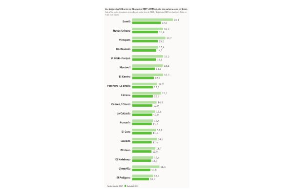
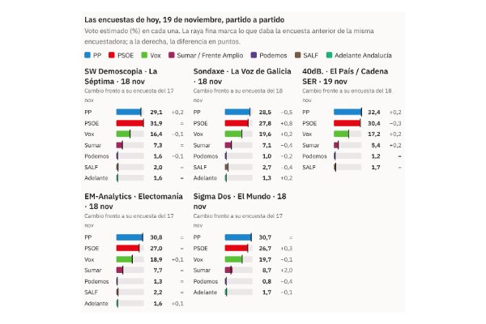

Actualidad · Lo que las encuestas no dicen · España
En 2023, las últimas encuestas daban al PP 5,7 puntos de ventaja sobre el PSOE y ganó por 1,4: si hoy fallaran igual, el PSOE iría primero
Lo que las encuestas de las elecciones generales del 29N no dicen: cuánto se equivocaron la última vez. En 2023 se quedaron 3,3 puntos cortas con el PSOE; en 2019, 3,1 con Vox.
Por Nacho G. del Álamo ·
Cada párrafo lleva una etiqueta: dato (cifra comprobable con las fuentes), patrón (relación que se repite, sin afirmar la causa), hipótesis (explicación posible, sin dos fuentes independientes) o contexto (hechos y declaraciones publicados por otros, enlazados). Cómo verificamos
ContextoDesde el martes 24 de noviembre no se podrá publicar ninguna encuesta de las elecciones generales del 29N: la ley electoral lo prohíbe en los cinco días anteriores a la votación. Antes de esa veda, conviene mirar hacia atrás. Las encuestas dicen dónde estaba cada partido cuando se hicieron; lo que no dicen es cuánto se equivocaron la última vez.
DatoEn julio de 2023, la media de la última encuesta de cada una de las 21 empresas que publicaron en las dos semanas previas a la veda daba al PP el 34,1 % y al PSOE el 28,4 %: una ventaja de 5,7 puntos. El 23 de julio, el PP sacó el 33,1 % y el PSOE el 31,7 %. La ventaja real fue de 1,4 puntos, calculada con los votos y no con los porcentajes redondeados. Las encuestas se quedaron 3,3 puntos cortas con el PSOE y dieron al PP 1,0 de más.
Ver la tabla
| Partido | Media de las encuestas | Resultado | Diferencia (puntos) |
|---|---|---|---|
| PP | 34,1 | 33,1 | +1,0 |
| PSOE | 28,4 | 31,7 | −3,3 |
| Vox | 13,1 | 12,4 | +0,7 |
| Sumar | 13,3 | 12,3 | +1,0 |
DatoNo fue cosa de una empresa. De las 21, 20 dieron al PSOE menos de lo que sacó, con estimaciones de entre el 26,3 % y el 29,4 %. Solo el CIS lo puso por encima, con el 32,2 %, y fue también el único que lo situó por delante del PP, al que dio el 30,8 %. Las otras 20 exageraron la ventaja del PP. La que más se acercó fue AtlasIntel: le dio 1,4 puntos, a menos de una décima de la ventaja real.
Ver la tabla
| Empresa | Medio | Publicada | PP | PSOE | Ventaja del PP |
|---|---|---|---|---|---|
| CIS | 2023-07-17 | 30,8 | 32,2 | −1,4 | |
| AtlasIntel | 2023-07-17 | 30,8 | 29,4 | +1,4 | |
| GESOP | Prensa Ibérica | 2023-07-16 | 30,6 | 27,4 | +3,2 |
| Opinòmetre | Ara | 2023-07-08 | 32,6 | 29,0 | +3,6 |
| Simple Lógica | elDiario | 2023-07-16 | 32,2 | 28,6 | +3,6 |
| YouGov | 2023-07-17 | 32,0 | 28,0 | +4,0 | |
| 40dB. | El País | 2023-07-16 | 32,9 | 28,7 | +4,2 |
| IMOP Insights | El Confidencial | 2023-07-17 | 32,9 | 28,2 | +4,7 |
| Cluster17 | El Grand Continent | 2023-07-17 | 33,6 | 28,9 | +4,7 |
| SocioMétrica | El Español | 2023-07-17 | 33,5 | 28,3 | +5,2 |
| Sondaxe | 2023-07-17 | 34,3 | 28,7 | +5,6 | |
| Ipsos | La Vanguardia | 2023-07-09 | 35,3 | 28,2 | +7,1 |
| Invymark | laSexta | 2023-07-15 | 33,5 | 26,3 | +7,2 |
| Sigma Dos | El Mundo | 2023-07-17 | 35,4 | 28,0 | +7,4 |
| Celeste-Tel | Onda Cero | 2023-07-14 | 36,5 | 28,4 | +8,1 |
| GAD3 | Vocento | 2023-07-17 | 36,9 | 28,6 | +8,3 |
| Target Point | 2023-07-17 | 36,4 | 28,1 | +8,3 | |
| DYM | Henneo y Joly | 2023-07-16 | 35,5 | 27,1 | +8,4 |
| Data10 | OKDiario | 2023-07-17 | 36,0 | 27,5 | +8,5 |
| Hamalgama Métrica | Vozpópuli | 2023-07-16 | 36,3 | 27,5 | +8,8 |
| NC Report | La Razón | 2023-07-17 | 37,2 | 28,3 | +8,9 |
En 2019, el que faltó fue Vox
DatoEl error no siempre va en la misma dirección. En noviembre de 2019, la media de las últimas encuestas de 15 empresas acertó casi con el PSOE (27,4 %, frente al 28,0 % que sacó) y con el PP (21,1 %, frente al 20,8 %). El que se escapó fue Vox: las encuestas le daban de media el 12,0 % y sacó el 15,1 %, 3,1 puntos más. Ninguna empresa llegó a ese dato: la que más le daba, un 14,2 %.
Qué pasaría hoy con el mismo error
DatoCon los datos a las 6.04 del 17 de noviembre de 2026, la media de encuestas de nuestro modelo da al PP el 30,9 % y al PSOE el 27,8 %: 3,0 puntos de ventaja para el PP. En 2023, las encuestas exageraron esa ventaja en 4,3 puntos. En 2019, cuando ganó el PSOE, sobrevaloraron al PP frente al PSOE en 0,9 puntos.
Ver la tabla
| Escenario | PP menos PSOE (puntos) |
|---|---|
| La media de hoy | +3,0 |
| Con el error de 2019 | +2,1 |
| Con el error de 2023 | −1,3 |
HipótesisSi las encuestas de hoy fallaran igual que en 2023, el PSOE iría 1,3 puntos por delante del PP. Si fallaran como en 2019, el PP seguiría primero, con 2,1 puntos de ventaja. Es una cuenta, no una previsión: nada dice que el error de esta vez vaya a parecerse al de las anteriores, y las empresas cambian sus métodos después de cada elección.
Preguntas frecuentes
¿Acertaron las encuestas en las elecciones generales de 2023?
No del todo. La media de las últimas encuestas daba al PP 5,7 puntos de ventaja sobre el PSOE y la real fue de 1,4. Al PSOE le daban el 28,4 % y sacó el 31,7 %.
¿Qué encuesta acertó más en 2023?
En la ventaja del PP sobre el PSOE, AtlasIntel, con 1,4 puntos. En el voto del PSOE, el CIS fue el único que le dio más de lo que sacó (32,2 %), pero también el único que lo puso por delante del PP.
¿Hasta cuándo se pueden publicar encuestas de las elecciones del 29N?
Hasta el lunes 23 de noviembre. La ley electoral prohíbe publicarlas en los cinco días anteriores a la votación.
Las encuestas de las elecciones generales del 29N · El CIS preelectoral
Método y fuentes
- Qué se compara
- La media de la última encuesta de cada empresa publicada antes de la veda en julio de 2023 (21 empresas) y en noviembre de 2019 (15), frente al resultado con voto exterior; y la media de encuestas de hoy corregida con esos errores.
- Límites
- Es una cuenta, no una previsión: el error de una elección no tiene por qué repetirse, y las empresas cambian sus métodos. La media de 2019 y 2023 es simple, una encuesta por empresa; la de hoy es la del modelo de mapaelectoral.es/encuestas. Solo se cuentan las encuestas de ámbito nacional recopiladas por Electográfica.
- Cómo se calcula
- Para cada elección, la última encuesta nacional de cada empresa publicada en las dos semanas anteriores a la veda (del 3 al 17 de julio de 2023 y del 20 de octubre al 3 de noviembre de 2019). Error: media de las encuestas menos resultado, en puntos de los votos válidos, con los resultados definitivos con voto exterior. Escenarios de hoy: ventaja del PP en la media del modelo a las 6.04 del 17 de noviembre menos lo que se exageró esa ventaja en cada elección. Script: actualidad/src/resumenes/encuestas_error_2023.py. Cifras reproducibles con los scripts del expediente de la pieza. Metodología de Actualidad · Metodología del Atlas
- Fuentes
- Ministerio del Interior, resultados electorales por mesa y voto CERA (municipio 999), vía pollspaindata
- Electográfica, encuestas de las generales de noviembre de 2019 y julio de 2023
- BOE, Ley Orgánica del Régimen Electoral General, art. 69.7 (veda de encuestas)
- Mapa Electoral, método del modelo de escaños
- Autoría
- Nacho G. del Álamo
- Revisión de datos y texto
- Nacho G. del Álamo, 17 de noviembre de 2026
- Publicado · actualizado
- 17 de noviembre de 2026 · 17 de noviembre de 2026
- Correcciones
- Ninguna.
Serie «Camino al 29N»: 166 piezas
- El mapa electoral de Ceuta y Melilla: Vox pasó de ganar 32 secciones de Ceuta a ninguna, y 13 de las 17 de Coalición por Melilla fueron al PSOE
- Los once municipios que visitan los candidatos el primer día de campaña, fuera de Madrid y Barcelona, cambiaron de ganador entre 2019 y 2023
- Dos de los cuatro del debate de laSexta no se presentan el 29N: ni Cuerpo ni Bustinduy están en ninguna lista
- El CIS da al PSOE más escaños que la media de encuestas en 13 provincias y menos en ninguna; en Madrid, entre 12 y 14 frente a 10
- A dos semanas del 29N, 14 de las 16 encuestas con escaños dan mayoría absoluta a PP y Vox; solo el CIS y SW Demoscopia ponen por delante al PSOE
- De los 25 convocados de De la Fuente nacidos en España, 15 nacieron donde ganó el PSOE en 2023 y 8 donde ganó el PP; en Puente Genil, el PP ganó por 31 votos
- Vox, primero en el CIS entre los de 18 a 24 años: la generación de 2008 estrena voto en unas generales
- El PSOE sube en siete de las nueve encuestas de la primera semana de campaña; el PP baja en cuatro y sube en otras cuatro
- Feijóo hace campaña con UPN en Pamplona, donde el PSOE ganó 77 de las 151 secciones en 2023; con UPN y PP sumados, se habría quedado en 49
- Al PP le faltaron 9.793 votos en 2023 para recuperar un diputado en Gipuzkoa; Feijóo arropa hoy a su candidato, atacado en Hernani
- Estás aquíEn 2023, las últimas encuestas daban al PP 5,7 puntos de ventaja sobre el PSOE y ganó por 1,4: si hoy fallaran igual, el PSOE iría primero
- Si la abstención fuera un partido, en 2023 habría quedado por delante del ganador en más de la mitad de las grandes ciudades y en la mitad de las secciones de España
- Voto por correo para las elecciones generales del 29N: el plazo para pedirlo acaba el jueves 19; en 2023, una de cada tres solicitudes llegó en las dos últimas semanas
- Encuestas y debate: tras el cara a cara de 2023, 10 de 14 encuestadoras ampliaron la ventaja del PP; trece días después ganó por 1,4 puntos
- Elecciones generales: una de cada tres secciones cambió de ganador entre 2019 y 2023
- Elecciones generales: las encuestas dan al PSOE entre el 25,5 y el 33,3 %
- Elecciones generales: Vox baja al 17 % en la encuesta diaria de El País
- Encuestas elecciones generales 2026, hoy 18 de noviembre: el PSOE, a dos puntos o menos del PP
- Encuestas elecciones generales 2026, hoy 19 de noviembre: Sondaxe deja al PSOE a 0,7 puntos del PP
- Debate Sánchez Feijóo: hora, dónde verlo y quién gana el cara a cara
- Ver las 166 piezas de la serie
Más datos: elecciones generales del 29N de 2026: fecha y escaños por provincia · resultados de las elecciones generales 2026 (29N) y los de 2023 · dónde y cómo votar el 29N: colegio electoral, voto por correo y plazos.
Sigue leyendo
 Encuestas de hoyEncuestas elecciones generales 2026, hoy 20 de noviembre: el PP gana en las cinco, por entre 2,0 y 4,6 puntos
Encuestas de hoyEncuestas elecciones generales 2026, hoy 20 de noviembre: el PP gana en las cinco, por entre 2,0 y 4,6 puntos Programas electoralesPrograma electoral de PP, PSOE, Vox y Frente Amplio: qué propone cada uno el 29N
Programas electoralesPrograma electoral de PP, PSOE, Vox y Frente Amplio: qué propone cada uno el 29N
Vox en GijónElecciones generales: en Gijón, Vox sacó en 2023 su mejor resultado en Somió, el barrio más rico: 17,0 % Frente AmplioElecciones generales: el modelo de encuestas da escaño al Frente Amplio en 5 de sus 17 provincias
Frente AmplioElecciones generales: el modelo de encuestas da escaño al Frente Amplio en 5 de sus 17 provincias El debateDebate Sánchez Feijóo: hora, dónde verlo y quién gana el cara a cara
El debateDebate Sánchez Feijóo: hora, dónde verlo y quién gana el cara a cara
Encuestas de hoyEncuestas elecciones generales 2026, hoy 19 de noviembre: Sondaxe deja al PSOE a 0,7 puntos del PP